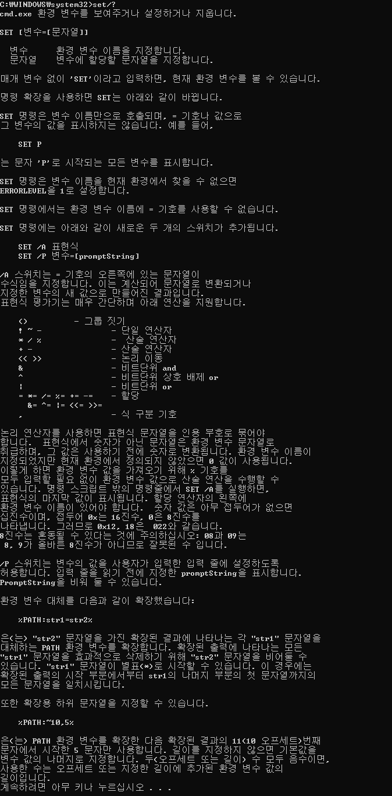
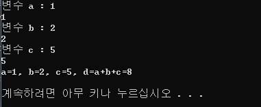
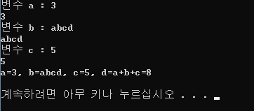
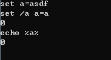
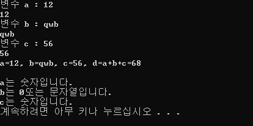

[Windows Batch] CMD에서 변수 사용하기(set 명령어)
1. set 명령어 사용하기
윈도우에는 cmd라는 명령 프롬프트가 존재합니다. cmd에는 다양한 시스템 명령을 사용하여 윈도우에서 발생하는 일부 오류들은 해결할 수도 있습니다.
cmd 명령어를 일괄 처리하기 위한 .bat 확장자를 가진 일괄 프로그램이 있습니다.

set 명령어에 대한 설명입니다. 저것보다 더 많은 내용이 있습니다. 더 알아보고 싶으시다면 cmd창에서 set/?를 입력하면 됩니다.
2. 변수 선언하고 연산하기 + 출력
cmd에 있는 명령어도 일반적인 프로그래밍 언어와 크게 차이는 없습니다. 이번 글에서는 cmd 명령어 중 set이라는 명령어를 통해 변수를 입력받고 연산 후 출력하는 것에 대해 알아보겠습니다.
set 명령어는 입력, 연산, 출력 외에도 환경변수 설정 등 여러가지 기능이 있으나 간단한 변수를 활용하는 것에 대해 먼저 알아보도록 하겠습니다.
- @echo off
- set /p a=변수 a :
- echo %a%
- set /p b=변수 b :
- echo %b%
- set /p c=변수 c :
- echo %c%
- set /a d=a+b+c
- echo a=%a%, b=%b%, c=%c%, d=%d%
- echo.
- pause
cmd에서 변수를 선언할 때는 set "변수이름=값 또는 문자열"으로 선언합니다. set /p 는 사용자로부터 입력을 받는다는 의미입니다. 변수를 출력할 때는 %변수%와 같이 변수를 %로 감싸서 사용합니다.
단, set /a 는 변수 또는 숫자를 연산할 때 사용합니다. set /a 에서 연산할 때는 %기호를 생략 가능합니다.

변수에 차례대로 1, 2, 5를 입력해줬습니다. 예상대로 값은 다 더한 값인 8이 출력됐습니다.

이번에는 변수 중 하나에 문자열을 입력했습니다. 문자열은 계산이 되지 않고 3+5만 계산하여 8이 출력됐습니다.
문자열은 정수형으로 무슨 값을 가지는지 확인하기 위해 set /a를 활용하여 정수형으로 변환해주겠습니다.

다음과 같은 코드를 실행시켜주면 a는 0이라는 결과 나옵니다.
set /a 는 오른쪽의 문자열을 수식으로 지정합니다. 따라서 /a 옵션을 줄 때 문자열을 대입하면 값은 0으로 계산됩니다.
만약 a=3이라고 대입했다면 3을 출력합니다.
3. 변수의 형태 구분하기
이와 같이 문자열이면 0을 출력하기 때문에 숫자 0를 제외한 나머지에 대하여 정수형인지 문자열인지 구분할 수 있습니다.
- @echo off
- set /p a=변수 a :
- echo %a%
- set /p b=변수 b :
- echo %b%
- set /p c=변수 c :
- echo %c%
- set /a d=a+b+c
- echo a=%a%, b=%b%, c=%c%, d=%d%
- echo.
- set /a a=a
- set /a b=b
- set /a c=c
- if %a%==0 (echo a는 0또는 문자열입니다.) else (echo a는 숫자입니다.)
- if %b%==0 (echo b는 0또는 문자열입니다.) else (echo b는 숫자입니다.)
- if %c%==0 (echo c는 0또는 문자열입니다.) else (echo c는 숫자입니다.)
- pause
이제 변수에 숫자와 문자열을 섞어서 입력하고 변수의 형태에 따른 결과를 출력하는 프로그램을 만들었습니다.

문자열과 숫자를 구분하여 출력하는 것을 확인할 수 있습니다.
이를 활용하여 사용자의 입력을 숫자 또는 문자열로 유도하는 프로그램을 만들 수 있습니다.